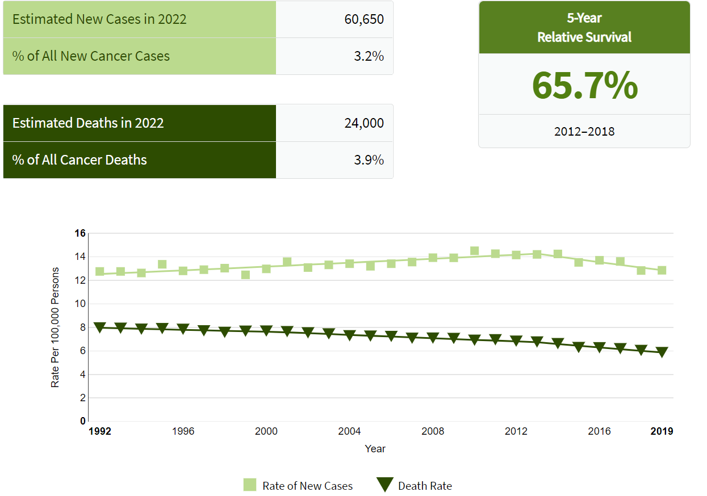
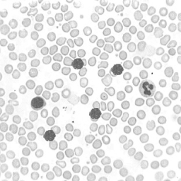
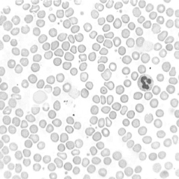
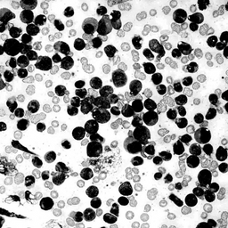
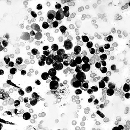
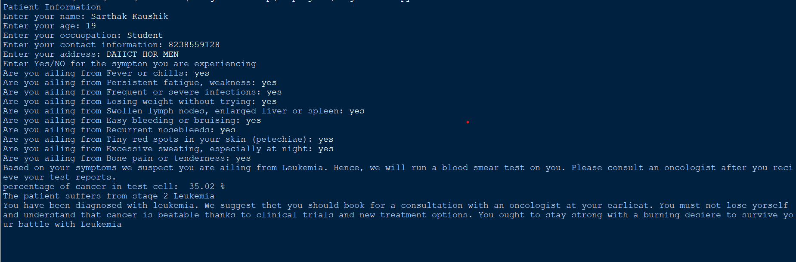

What is Leukemia ?
Leukemia was first described by anatomist and surgeon Alfred-Armand-
Louis-Marie Velpeau in 1827. A more complete description was given by
pathologist Rudolf Virchow in 1845. Around ten years after Virchow’s
findings, pathologist Franz Ernst Christian Neumann found that the
bone marrow of a deceased person with leukemia was colored ”dirty
green-yellow” as opposed to the normal red. This finding allowed Neu-
mann to conclude that a bone marrow problem was responsible for the
abnormal blood of people with leukemia.
Leukemia is cancer of the body’s blood-forming tissues, including the
bone marrow and the lymphatic system. Many types of leukemia exist.
Some forms of leukemia are more common in children. Other forms of
leukemia occur mostly in adults. Leukemia usually involves the white
blood cells. Your white blood cells are potent infection fighters — they
normally grow and divide in an orderly way, as your body needs them.
But in people with leukemia, the bone marrow produces an excessive
amount of abnormal white blood cells, which don’t function properly.
Treatment for leukemia can be complex — depending on the type of
leukemia and other factors. But there are strategies and resources that
can help make your treatment successful.
Question:
Should we add information about the types of leukemia
as well and should we add images as well of leukemia ailing blood cell,
is more introduction, history or statistics about leukemia needed ???

Motive :
Upon researching leukemia we realized that the general population lacks
awareness and resources to take proper tests and make consultations
with doctors. Hence, we deicided to take a step forward to assist and
provide a viable solution to the people by developing the Leukemia
Detection Module in order to allow people to get access to easier and
cheaper testing services. We hope to raise awareness about Leukemia
and also help in curbing the unpredictability of this disease.
LDM :
The Leukemia Detection Module compares the average healthy blood
cell with the blood cell of a person suspected to be ailing from Leukemia.For
this we need to check the blood smear of a person and by calculating
the percentage of lymphocytes and white blood cells,LDM gives the re-
sult whether the person is suffering from leukemia or not.Also it gives
information about the cancer stage.For calculating the percentage we
need to convert images into numbers which is done by using Matrix.
Formulating The Mathematics :
In the module we will compare the two cells thus first we will take the
images of the cell and then we will convert in to 3-D matrix with the
help of coding. Image is arrangement of colours in a pattern, and to
form matrix of this image,LDM assign numbers to this colour by using
the percentage of Red Green and blue colours.By regulating these three
colours from 0 to 255,we get all the colours.For example,Yellow can be
represented as(R=255,G=255,B=0)
So every colour has its own array of 3 elements.Due to this image is
converted to 3D array. We will perform the required calculations on
matrix discussed in section ’solving the mathematics’ to detect the
cancer in the cell. The mathematics include addition and subtraction
of matrix and calculating the percentage to determine the cancer


Healthy Cells


Cancerous Cells
Solving The Mathematics :
As discussed above first we will convert the images into matrix. If
we have image dimensions of 256*256 we get the matrix of dimen-
sion(256*256*3).Now in the image the lymphocytes cell and white blood
cell whose number increases during cancer are depicted as dark in colour
and other components which are present in high number in healthy cell
are depicted white in colour. Thus after taking both image matrix we
will subtract the matrix which will give the negative elements,by cal-
culating the percentage of this negative elements with respect to total
number of elements gives us the percentage of the lymphocytes and
white blood cells which causes the leukemia cancer. This percentage
helps to recognise the cancer stage
Output :

Interpretation and Significance of Solution :
Thus with the help of LDM we are able to find the percentage of cancer
in a patient and the stage of leukemia.According to internet survey
their are many patients of leukemia in India who get to know about
the cancer at third stage or fourth stage due to which it becomes hard
to treat them and many patients lost their life just because they did
not get to know about the cancer at an early stage.
With the help of our test module many lives can be saved as it will
inform the patients about the cancer at an early stage so that the
patient can get required treatment.
For further details visit YouTube or LaTex
Contributors